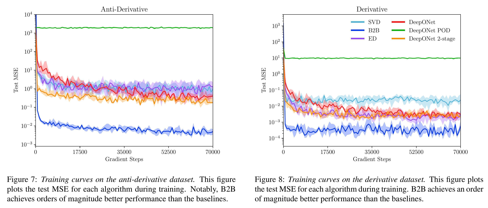

Results



We present Basis-to-Basis (B2B) operator learning, a novel approach for learning operators on Hilbert spaces of functions based on the foundational ideas of function encoders. We decompose the task of learning operators into two parts: learning sets of basis functions for both the input and output spaces, and learning a potentially nonlinear mapping between the coefficients of the basis functions. B2B operator learning circumvents many challenges of prior works, such as requiring data to be at fixed locations, by leveraging classic techniques such as least-squares to compute the coefficients. It is especially potent for linear operators, where we compute a mapping between bases as a single matrix transformation with a closed form solution. Furthermore, with minimal modifications and using the deep theoretical connections between function encoders and functional analysis, we derive operator learning algorithms that are directly analogous to eigen-decomposition and singular value decomposition. We empirically validate B2B operator learning on six benchmark operator learning tasks, and show that it demonstrates a two-orders-of-magnitude improvement in accuracy over existing approaches on several benchmark tasks.
@misc{basistobasisoperatorlearning,
title={Basis-to-Basis Operator Learning Using Function Encoders},
author={Tyler Ingebrand and Adam J. Thorpe and Somdatta Goswami and Krishna Kumar and Ufuk Topcu},
year={2024},
eprint={2410.00171},
archivePrefix={arXiv},
url={https://arxiv.org/abs/2410.00171},
}